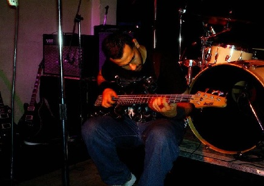
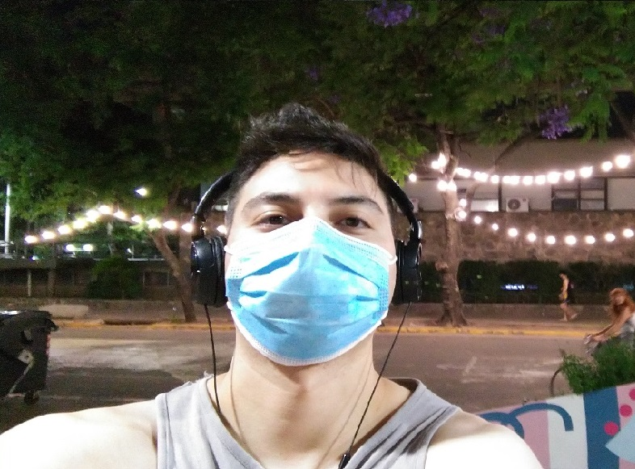

FEDERICO FARIOLI:
NACIDO EN CORDOBA, realizo sus estudios en los colegios Republica de Francia y San Jose Artesano. Empezo en la musica tocando el teclado y la guitarra, luego aprendio bateria y luego bajo. Conocio a Marcos en el año 2001 y juntos empezaron un proyecto musical llamado "El Gnomo", Junto a otros musicos. Luego de separarse de la banda ingresa en "Tren azul" y graba su primer disco profesional. Por motivos personal elije separarce de la banda y radicarce en lavullale en el año 2013. en el año 2015 forman con marcos un nuevo proyecto llamado "Hot Rod", haciendo musica alternativa. Por motivos de Distancia, los musica trabajan de forma remota y graban todos sus temas y videos de est aforma.

Marcos Machur:
NACIDO EN CORDOBA, realizo sus estudios en los colegios Republica de Francia y Nuestra señora del Huerto. Empezo en la musica tocando la guitarra. Conocio a Federico en el año 2001 y juntos empezaron un proyecto musical llamado "El Gnomo", Junto a otros musicos y graba su primer disco profesional. Por motivos personal elije separarse de la banda y abandonar momentaneamente la musica. en el año 2015 forman con Federico un nuevo proyecto Musical llamado "Hot Rod", haciendo musica alternativa. Por motivos de Distancia, los musica trabajan de forma remota y graban todos sus temas y videos de est forma.
 INVITADOS:
INVITADOS: Todos artitas cordobeses, viven en diferentes localidades de la provincia, incluso radicandose algunos en Buenos AiresFueron convocados por Federico para formar parte del proyecto Angeles del Sur, homenaje a los caidos en la guerra de malvinas. Grabaron el video de forma paralela, uniendo los fragmentos para ser editados en Buenos Aires y finalizar el proyecto.